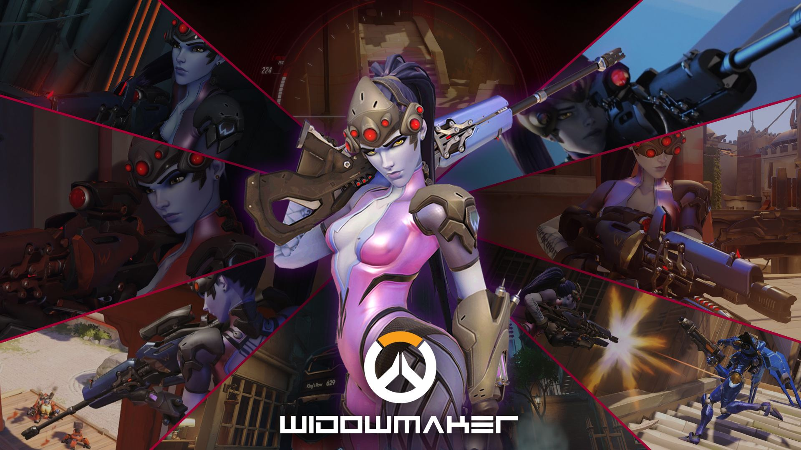
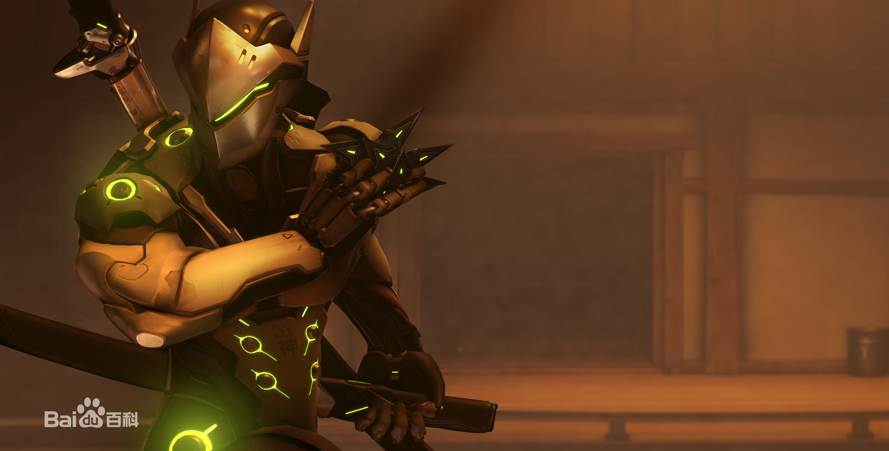
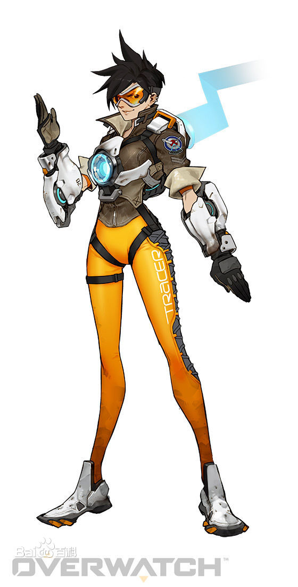
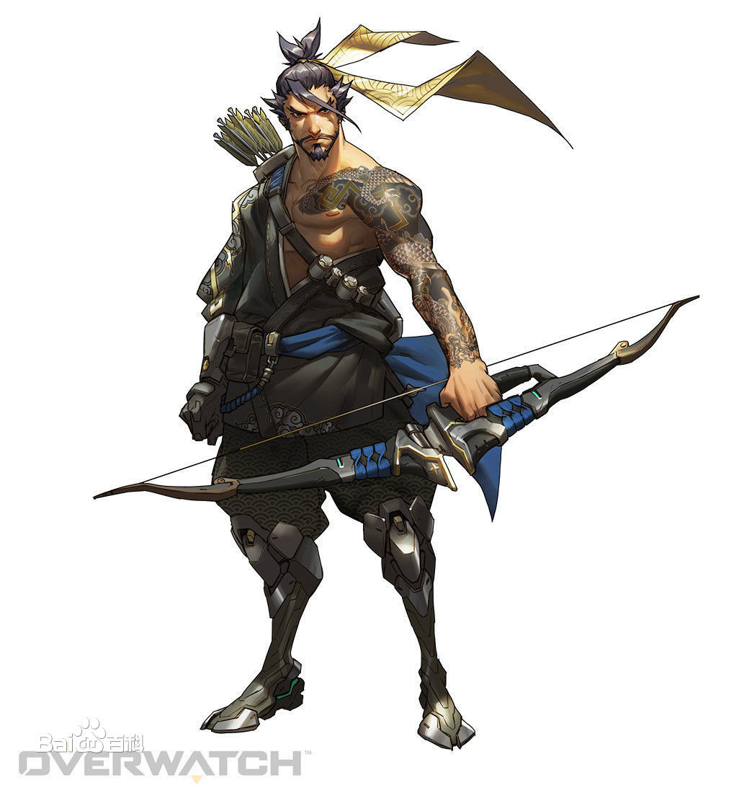
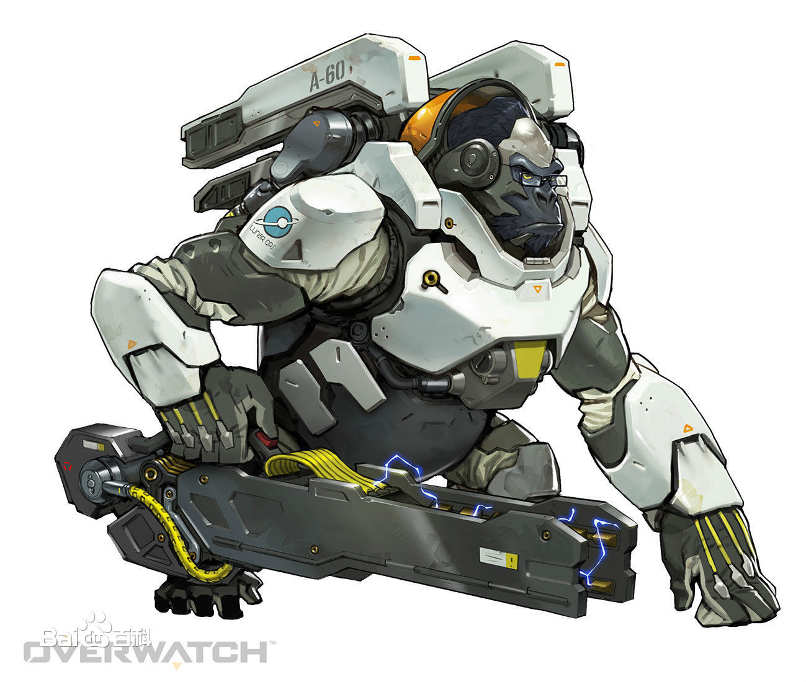
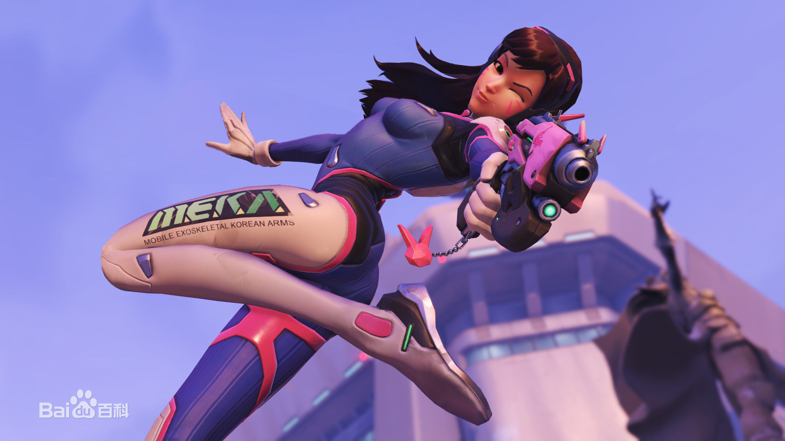

《守望先锋》（Overwatch，简称OW） 是由暴雪娱乐公司开发的一款第一人称射击游戏，于2016年5月24日全球上市，中国大陆地区由网易公司代理。 （百度百科-守望先锋）
游戏以未来地球为背景，讲述人类、守望先锋成员和智能机械的恩怨纠葛。游戏拥有22位英雄，每一位英雄都有各自标志性的武器和技能。
英雄介绍
黑百合，是游戏《守望先锋》中的角色，防御型英雄，台版译名为夺命女。 “黑百合”全身都是致命的武器，包括能够放出致命毒素的诡雷、能够为队友提供红外视野的护目镜以及一把可以在狙击和自动模式间切换的强大步枪。

技能
源氏
猎空
半藏
温斯顿
D.V
| 人物 | 时间 | 分段 |
|---|---|---|
| 黑百合 | 100h | 2500 |
| 76 | 40h | 2500 |
| 源氏 | 20h | 1500 |
| 合计 | 20h | |
版权所有©